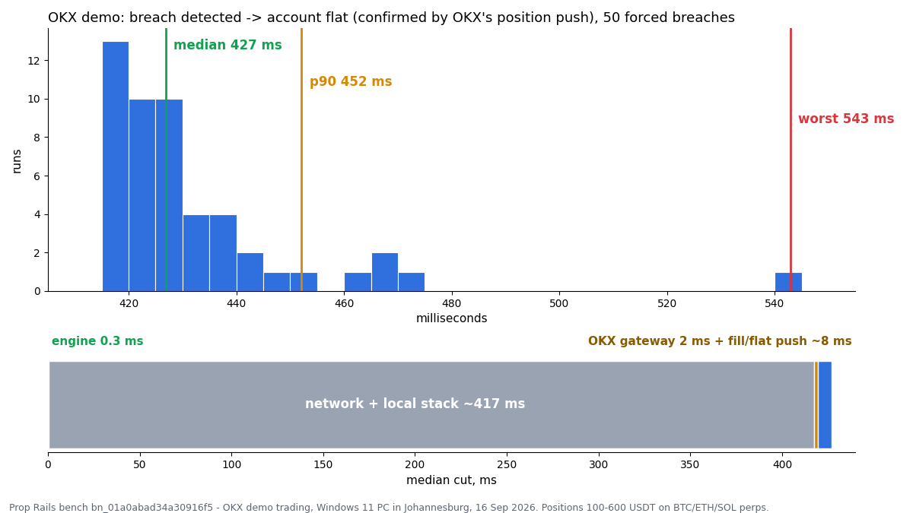

Open exposure
Randomized demo positions and optional resting / conditional orders are created on a dedicated account.
On 16 September 2026, Prop Rails forced 50 breaches on a dedicated OKX demo account and timed the complete enforcement path to the exchange’s own flat-state confirmation.

Benchmark bn_01a0abad34a30916f5 · 50 runs · OKX global demo · BTC / ETH / SOL perpetual positions.
Each run opens controlled exposure, arms a breach through the production rule engine, executes the same cut path used by watch mode, then verifies the account over REST after the exchange push shows no positions.
Randomized demo positions and optional resting / conditional orders are created on a dedicated account.
A synthetic or market-driven floor breach is armed through the normal risk engine.
WebSocket close orders and cancellations are dispatched, with REST fallback and retry logic available.
The cut clock stops when OKX’s own position push first shows the account flat.
The benchmark separates local dispatch time, WebSocket round trip, gateway processing, fills and final exchange state.
| Metric | p50 | p90 | p99 | What it means |
|---|---|---|---|---|
| Breach → first cut request | 0.3 ms | 1.2 ms | 7.6 ms | Local rule decision and dispatch. |
| Close order WS RTT | 419.2 ms | 425.7 ms | 508.4 ms | Round trip from Johannesburg host to OKX demo and back. |
| Inside OKX gateway | 2.02 ms | 2.13 ms | 2.26 ms | Exchange gateway inTime → outTime. |
| Ack → filled push | 3.5 ms | 19.4 ms | 47.1 ms | Accepted close order to exchange-reported filled state. |
| Breach → flat push | 426.9 ms | 452.1 ms | 509.2 ms | Headline end-to-end risk result. |
Every figure in this table is derived from the published data/bench.db for benchmark bn_01a0abad34a30916f5, using the same linear-interpolation percentile function as reproduce.py in the repository. Check them yourself →
Latency evidence becomes misleading when demo, network location, acknowledgement semantics or sample size are hidden.
OKX demo uses separate infrastructure and may not match production matching or push behaviour.
The benchmark host was in Johannesburg; placing the same engine closer to OKX should change RTT.
The report does not treat an accepted order as equivalent to the account being flat.
p99 from 50 runs is indicative. Larger samples are needed for precise tail characterization.
The public repository includes the SQLite data, schema, reports and a standard-library reproduction script.